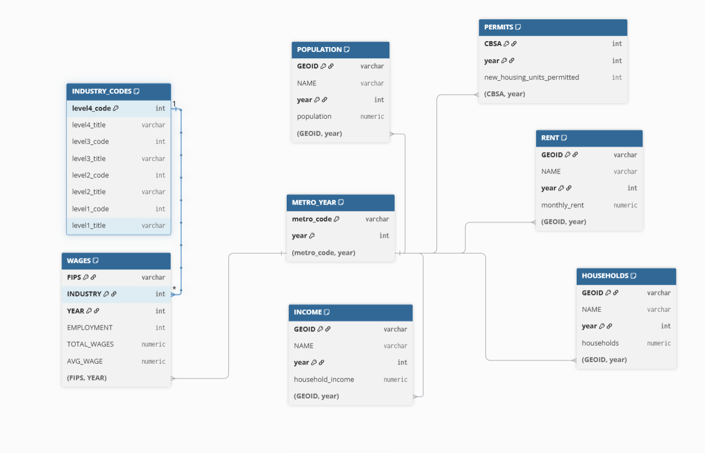
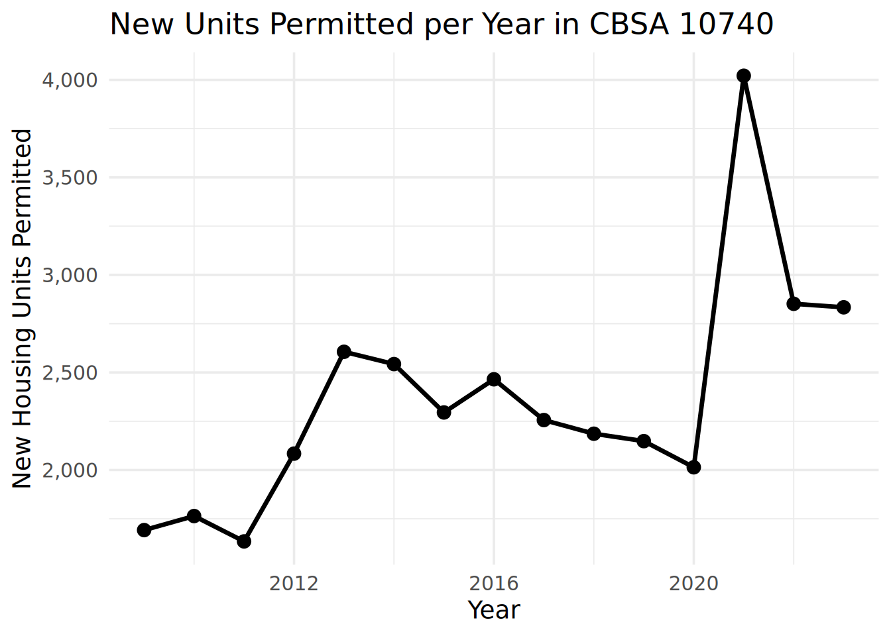
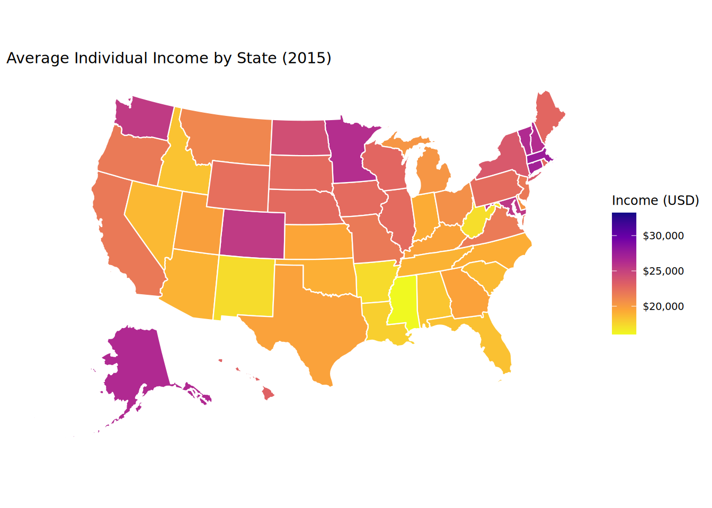
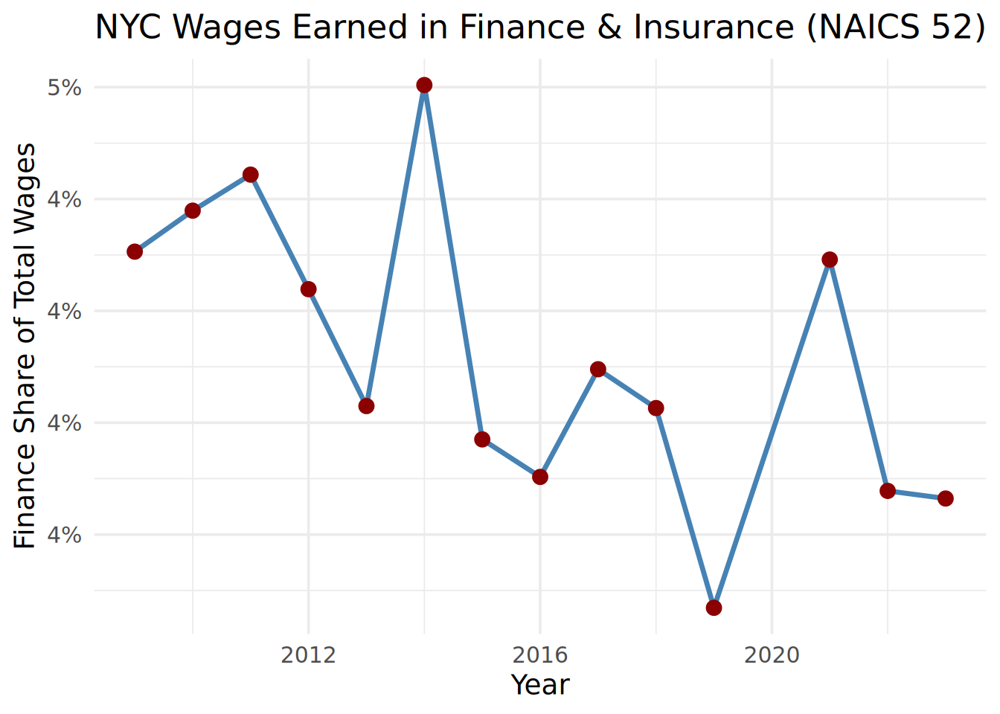
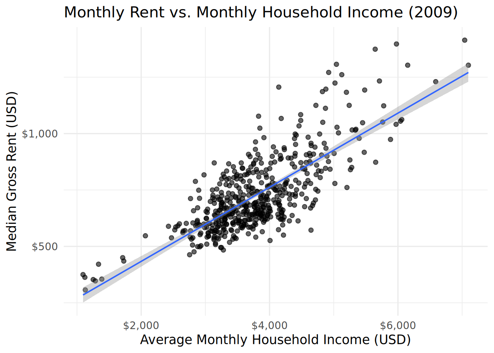
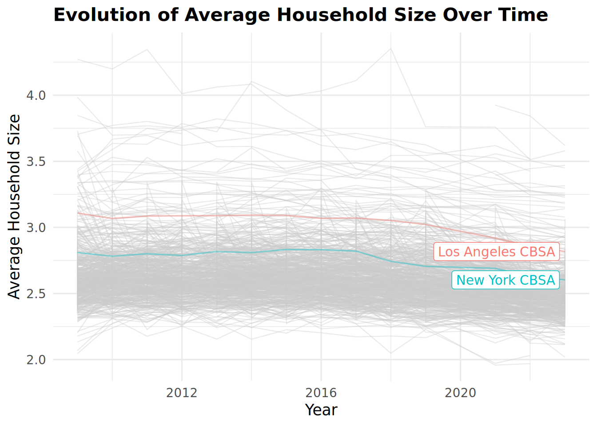
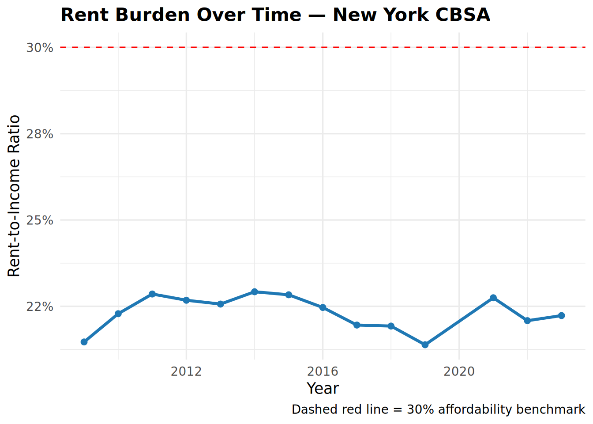
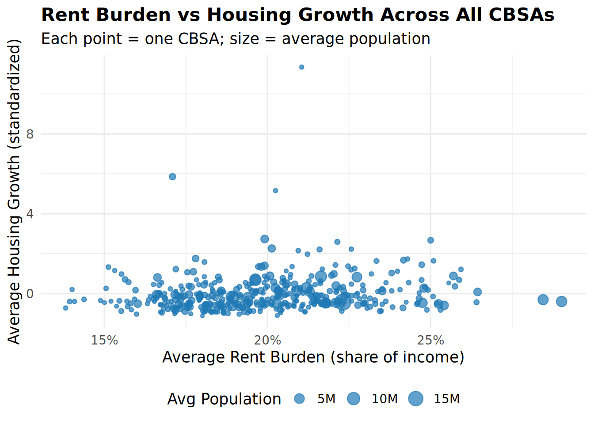
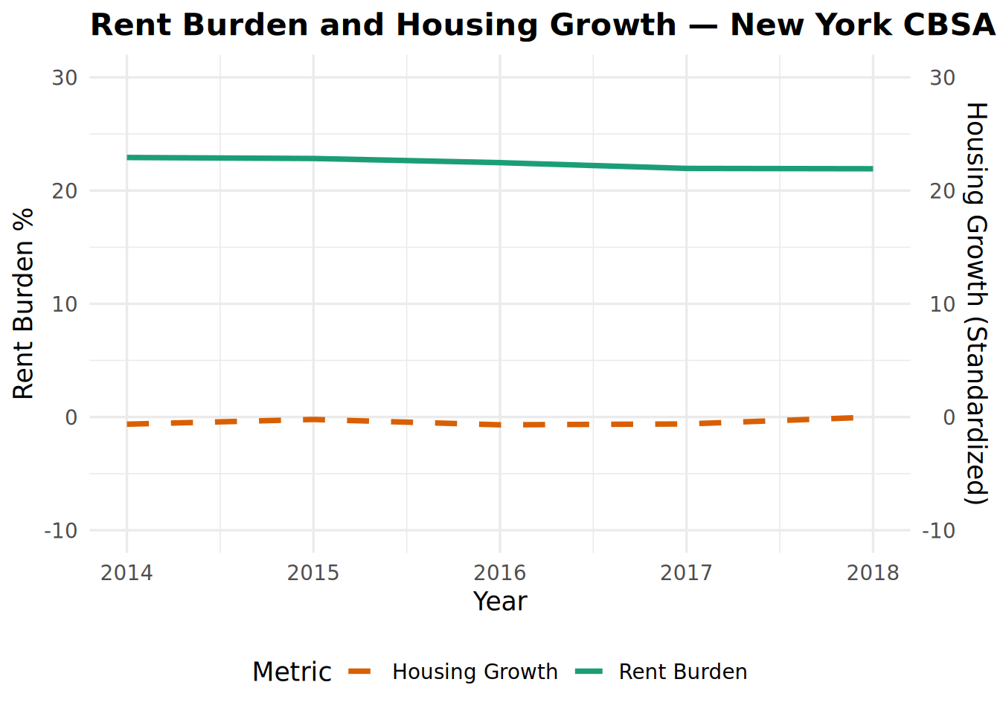
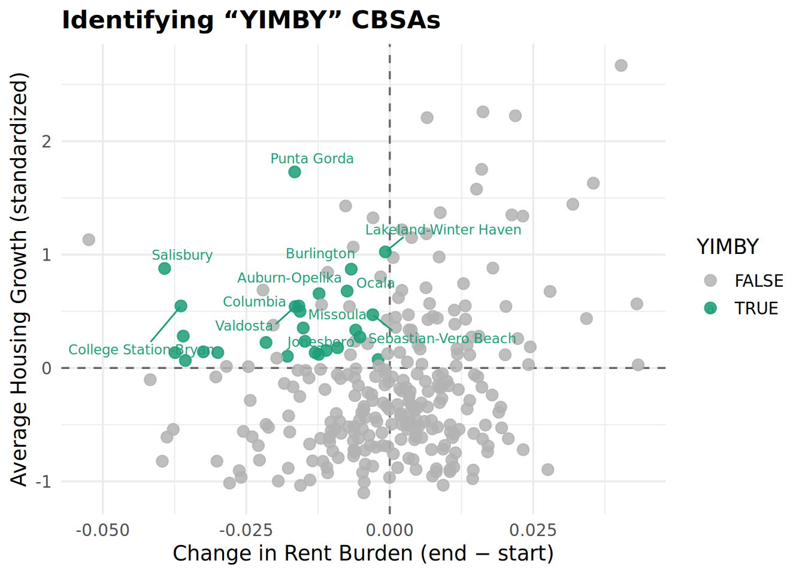

Affordability for 500
How can something truly be called a necessity if so many people can’t afford it?
In a perfect world, one could live wherever they wanted. Spoiler alert, this world is far from perfect.
Affordability isn’t just about price—it’s about access, opportunity, and fairness in everyday life.
But then again, you have NIMBY’s who think their opinions matter more than others.
NIMBY’s are our biggest opposition going back years. Unfortunately for them, many of us, like myself, are here to evicerate them. With your help, we will be able to turn those N’s into Y’s and start the YIMBY epidemic.
In the following page, I will show findings about housing affordability in NYC. In addittion, we will dive into what a federal YIMBY-incentive program could look like. At the end, I will introduce an new bill that will change the landscape of affordable housing for future generations.
First, we are going to familiarize ourselves with the data will be using. Below, you will see the relationships between all of our data tables and how they can be related to one another.

Next, we will see some of the findings that we can extract from this data. To begin, we seek out the top 5 CBSAs that permitted the largest number of new housing in the 2010’s.
As we can see, the CBSA that permitted the largest number of new housing units between 2010 and 2019 was CBSA in Houston-The Woodlands-Sugar Land, TX Metro Area.
Next, we’ll take a look a CBSA 10740, located in Alburquerque, New Mexico and analyze their yearly addition of new housing units.

As shown in the graph above, the number of new housing units permitted were on a steady decline up until the COVID pandemic. Then, in 2021, CBSA 10740 had its highest number of new housing units permitted, with 4021 units.
Next, we go over to look at average income per state, more specifically in the year 2015.

The map above shows all 50 states average income. However, it does not include additional US territories that are also included in the data. Therefore, more analysis has to be completed. That’s when you figure out that the District of Columbia had the highest average individual income for 2015, coming in at $33,233. Something, people in the government should be familiar too.
Next findings show which CBSA had the most amount of data scientists in the last 5 years.
In 4 out of the last 5 years, San Francisco has had the most data scientists. To get a better understanding of these part of the data, I wanted to see the NYC CBSA and if they have ever had the most data scientists. After taking a closer look at more previous years, you are able to find that 2015 was the last year that the NYC CBSA led the country for data scientists.
The last thing we take a look at initially, is the total wages in the NYC CBSA. We look specifically into the wages that come from the finance and insurance industries to figure the percentage this is of the total wages.

We look at various years to find no trend. However, we are able to find the peak in the year 2014, with about 5% share of the total wages for the CBSA for the year.
To keep on the trend of familiriaty with the dataset, we will see more visualizations to show different types of relationships.

The visualization above shows us the relationship between monthly rent and average household income per CBSA in 2009.
Each dot in the scatter plot refers to a different CBSA.
As you could see, there is a positive correlation between the cost of rent and household income.

The next visualization shows the relationship between total employment and total employment in the health care and social services sector across different the 5 CBSAs with the highest employment total.
Over time, depending on the CBSA, the share is volatile and can either decrease or increase. The time where it mostly increases is in the year 2020, due to the COVID-19 pandemic.
The third visualization is the evolution of the average household size over time.
We highlighted two specific CBSAs, the NY and LA ones, to take a closer look at the evolution.
We can infer that the average household size, especially in those CBAs, has been steadily decreasing.
The next two visualizations will have to deal with rent burden.
We are going to create an rent-to-income ratio and compare the results around the CBSAs.

In the visualization above, we take a look at the rent burden in the CBSAs (33100 + 33124) in the Miami metro area. To understand better, the dashed red line represents the 30% affordability benchmark.
As you could see, the rent burden for South Floridians has been on an exponential rise post pandemic.

The next visualization shows the rent burden in 2023 for CBSA’s across the nation.
We are highlighting the CBSAs with the highest and lowest rent burdens.
To stay with the trend from the first rent-burden visual, one can assume that the rent burden in the entire state of Florida is increasing in all areas of the region.
Next, we are going to look at housing growth within the CBSAs.
We are going to construct two metrics; one will allow us to see the housing growth based on population of a CBSA and number of new housing units permitted for the year. The other metric will compare the housing permits to the population growth over a 5 year lookback windown.
Lets first take a look at the first metric.
After coming up with our metric, we are able to separate the top 10 and bottom 10 CBSA’s in terms of instantaneous housing growth.
To explain in English terms, lets take a look at the first table.
Myrtle Beach CBSA was one of the most construction-intensive metros in the entire country in 2023 — building new housing far faster than typical cities its size. (Over nine standard deviations above the national average)
In contrast in the second table, we can see see that the Decatur CBSA built noticeably fewer new homes per resident than most U.S. metro areas — about one standard deviation below average.
Next, we will take a look at the second metric.
After coming up with our second metric, we are able to separate the top 10 and bottom 10 CBSA’s in terms of rate-based housing growth.
To explain better, we can see that in 2023, the Springfield CBSA had a housing_growth_rate_std of +2.1026, meaning it was building housing at a rate significantly higher than most U.S. metro areas relative to its recent population growth.
Now on the other side of the spectrum, in 2023, the Manhattan CBSA had a housing_growth_rate_std of −0.141, meaning it was very close to the national average, with just a slight tendency to underbuild relative to population growth.
The last metric we will take a look is a composite score that combines the first two metrics.
Once we figured out the metric, we are going to identify the CBSA’s that do well and poor with this measure. This will give us an idea to the Metro areas that are most YIMBY friendly.
Therefore, in 2023, the Punta Gorda CBSA had a housing_growth_composite_std of +3.5413, meaning its overall pace of housing development was exceptionally strong.
That makes Punta Gorda one of the most construction-active metros in the country when you consider both its raw building rate and how well housing supply is keeping up with population growth.
On the other hand, in 2023, the Morgantown CBSA had a housing_growth_composite_std of −1.137, meaning its overall housing growth pace was moderately below the national average.
A value of −1.14 indicates Morgantown’s combined housing indicators — both how much it’s building and how well it’s keeping up with population growth — were a little over one standard deviation below what’s typical across U.S. metros.
The last thing we’ll do before we introduce the bill is to visualize the relationship between our Rent Burden and Housing Growth metrics.

In the scatter plot above, we are trying to interpret if there is any correlation between average rent burden and average housing growth while also trying to show the size of population of each CBSA.
Each dot in the scatter plot represents a different CBSA.
Unfortunately, we do not see any correlation between the two.

In the line graph above, we spotlight the CBSA in New York (35620) to show the similarities between the trend of both their rent burden and housing growth from 2014 to 2018.
As you can see, you may be able to see that trend for both metrics follow similar paths. However, it is not clear to show that they both follow the same trends.
The last visualization we are going to see is to search which CBSAs identify as the most YIMBY.
To determine, we have 4 criteria that each has to meet: - had relatively high rent burden in the early part of the study period - have had a decrease in rent burden over the study period - have had population growth over the study period - have had above-average housing growth during the study period

From the visual above, we get the list below of CBSAs that meet all 4 criteria. In total, it is 27 CBSAs.
Now that we have studied the data extensively, it is time to have a call to action.
It is my honor to introduce the bill below.
The “Rebuild the American Dream Act”
Last Updated: Saturday 11 01, 2025 at 20:21PM